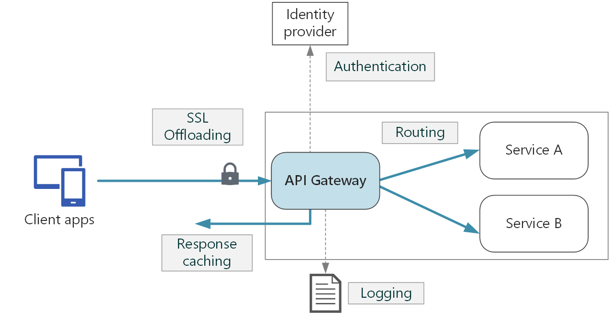

Golang, gRPC, Redis, Kafka
Реализована шлюз-система (авторизующий маршрутизатор), сервис интегрирован в IaC CI/CD платформу, собираются подробные метрики, логи, трэйсинг, аудит.

func (a *ActiveUsersObservable) Scheduler() {
a.db.WithAuthStream(context.Background(), func(ch chan p.AuthStreamPair) {
l := a.logger.With(zap.String("process", "scheduler"))
l.Info("started loop")
defer l.Info("stop")
go a.mapLoop()
ticker := time.NewTicker(a.updatePeriod)
defer ticker.Stop()
for {
select {
case <-a.ctx.Done():
close(a.cmds)
return
case <-ticker.C:
a.squash()
case pair := <-ch:
a.add(pair.TokenHash, pair.AuthID)
}
}
})
}
func (a *ActiveUsersObservable) mapLoop() {
for cmd := range a.cmds {
switch cmd.GetCommandType() {
case addCommandType:
if cmd.(*addCommand).Token != "" {
a.activeTokens[cmd.(*addCommand).Token] = struct{}{}
} else {
a.activeAuthIDs[cmd.(*addCommand).AuthId] = struct{}{}
}
buffSize := uint(len(a.activeAuthIDs) + len(a.activeTokens))
if buffSize >= a.lastActiveBufferSize {
go a.squash()
}
case getKeysCommandType:
authIDs := make([]int64, 0, len(a.activeAuthIDs))
tokens := make([]string, 0, len(a.activeTokens))
for id := range a.activeAuthIDs {
authIDs = append(authIDs, id)
}
for token := range a.activeTokens {
tokens = append(tokens, token)
}
for k := range a.activeTokens {
delete(a.activeTokens, k)
}
for k := range a.activeAuthIDs {
delete(a.activeAuthIDs, k)
}
cmd.(*getKeysCommand).resp <- keys{
authIDs: authIDs,
tokens: tokens,
}
}
}
}
Сервис написан на Golang и оптимизирован для высокой производительности с учетом особенностей работы языка и планировщика. Для взаимодействия между микросервисами используется протокол gRPC. Синхронизация обновлений сессий происходит с использованием брокера Kafka. Для хранения информации используются Postgres, Redis.
Авторизующий маршрутизатор обеспечивает интеграцию между клиентами и сервисами, обрабатывая процесс аутентификации и авторизации. Он принимает запросы от пользователей и добавляет идентификаторы пользователей в заголовки запросов. Затем маршрутизатор использует таблицу маршрутизации, чтобы отправить запросы в соответствующие сервисы, с учетом настроенных прав доступа и разрешений для каждого пользователя.
В роутере присутствует rate limiter с гибкой настройкой правил с учетом сессии, платформы, групп эндпойнтов. А также другие чекеры (checkers), например, проверка версий приложения с учетом типа клиента.